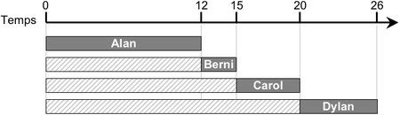

Quatre castors sont convoqués au barrage pour parler individuellement avec le grand chef Castor.
Les durées de leurs entretiens varient :
| Alan | Berni | Carol | Dylan |
| 12 minutes | 3 minutes | 5 minutes | 6 minutes |
Les quatre castors arrivent tous au même moment. Du coup, certains vont devoir attendre.
Par exemple, considérez l'ordre de passage : Alan, puis Berni, puis Carol, puis Dylan,
comme illustré ci-dessous.
|  |
|
Dans cet exemple, le temps moyen passé par les castors au barrage est de (12 + 15 + 20 + 26) ÷ 4 = 18,25 minutes.
|
Le grand chef Castor souhaite organiser les rendez-vous de façon à minimiser le temps moyen passé par les castors au barrage. Quel ordre de passage doit-il proposer ?
|
Nom
Alan
Berni
Carol
Dylan
|
Pour faire attendre les gens le moins de temps possible, il faut faire passer en priorité ceux qui ont un temps de passage le plus petit. Donc, le meilleur ordre de passage est : Berni (3 min), Carol (5 min), Dylan (6 min), Alan (12 min).
Le temps total passé au barrage est : 3 + (3+5) + (3+5+6) + (3+5+6+12) = 51 minutes, soit un temps moyen de 12,75 minutes. Ceci dit, observez que pour résoudre ce sujet, on n'avait pas du tout besoin de calculer des sommes ni des moyennes.
L'algorithme qui donne le résultat optimal (le meilleur possible) pour ce sujet se contente de considérer à chaque étape la personne dont le temps de passage est le plus petit possible, sans prendre en considération ce qui se passera par la suite. On appelle ce type d'algorithme un algorithme glouton. Pour certains problèmes, comme par exemple celui présenté ici, un algorithme glouton permet d'obtenir le résultat optimal.